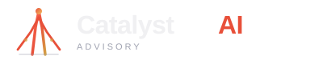

A catalyst spark mark (converging lines rising to an apex) paired with the "Catalyst AI" wordmark.
The icon represents a turning point / acceleration moment. Works as both a full logo and a standalone favicon mark.
Dark Background

Light Background
Size Variations (Dark)
Small (120px)
Medium (260px)
Large (400px)
Version 2 — Typographic Mark
A purely typographic logo: "CATALYST" in bold caps with a distinctive diagonal slash through the first "A",
representing the catalyst turning point. A small diamond spark sits at the top of the slash.
"AI" is set in the vermillion accent. No icon needed — the letterform treatment IS the mark.
Dark Background
Light Background
Size Variations (Dark)
Small (120px)
Medium (260px)
Large (400px)
Side-by-Side Comparison
V1 — Mark + Wordmark
V2 — Typographic
V1 — Mark + Wordmark
V2 — Typographic
Design Notes
V1 — Mark + Wordmark
The mark shows three converging lines rising to a spark point — a visual metaphor for "catalyst" as acceleration and transformation
The spark/circle at the apex doubles as a favicon at small sizes
Vermillion-to-gold gradient on the mark ties it to the site's accent palette
"Catalyst" in Bricolage Grotesque (display font), "AI" in vermillion accent
"ADVISORY" in Urbanist with wide letter-spacing for a premium feel
V2 — Typographic
Bold, all-caps "CATALYST" in Bricolage Grotesque at 800 weight — authoritative and distinctive
A diagonal slash through the first "A" with a diamond spark at its tip — the catalyst moment built into the letterform
Gold separator dot between "CATALYST" and "AI" creates visual rhythm
No icon needed — the modified "A" IS the brand mark
Spaced-out "ADVISORY" tagline provides a clean, premium base